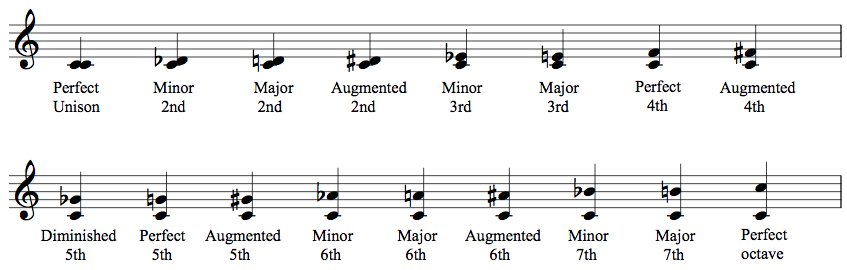

モジュール詳細：音程
2個のボタンしかないなんて、超カンタンじゃん！
- モジュール上には、ラベルが記された2つのボタンがある。
- モジュールを解除するには、モジュールで再生される音の正しい音程(インターバル)を送信する。
- 間違った音程を送信すると、ミスが記録される。
- ボタンの押し方は「左左、右右、左右、右左」の4種類の組み合わせがある。
- これらの組み合わせのうち2つは、一方のボタンが循環しながらそのボタンに応じて一定の方向に3つの音を奏でる。左のボタンは、常に「I（長音程）、A（短音程）、+（増音程）、o（減音程）、P（完全）」の順で循環する。右のボタンは、1～8までの数字を循環させる。
- 残りの組み合わせのうち1つは、音程を奏でる。パターンは、メロディー（上昇または下降）またはハーモニー（同時）である。これが、送信する必要のある音程である。
- 残り1つの組み合わせは画面上に現れている音程を送信し、3つの和音を奏でる。この組み合わせは最初に入力された際には送信されない。
- 全ての組み合わせはシャッフルされているが、変更はされない。
- このマニュアルが何を言っているのか分からない場合は、「音程にまつわる講義」を参照すること。
鍵盤
音程にまつわるありがたい講義
音程とは、ズバリ二つの音の高さの差を表すんだ。音程というと我々はピッチ(pitch)を思い浮かべるかもしれないが、厳密に言うとそれは音高と呼ばれ、全く異なるんだよね。それぞれの音程は「質(音階の英字)」と「量(数字)」で記述する。例えば、M6やm3やP4という感じだ。やはり何事も質と量のバランスが大事ってこと。
ここからは質について詳しく話していこう。各音階が持つ質は「長音程(M)、短音程(m)、増音程(Aug)、減音程(Dim)、完全(P)」のどれかになる。「そんなの日本人でも聞いたことねぇよ！」とツッコミたくなるかもしれないが、まぁ落ち着いてくれ。音楽のコードで「メジャー(M)、マイナー(m)」くらいは何となく聞いたことあるだろう。それと近い。ただ、質が完全の音程はP1、P4、P5、P8しかない。しかも、これらの音程は長音程にも短音程にもなれないんだ。どういうことか分かるか？そう、M5とかm8という音程は存在しないんだ！もちろん、逆にP2やP7も存在しない。
しかも、まだ存在しない音程はある。それはdim1だ。このdimというのは、短音程のときの差から更に半音狭めた時の音程になる。下の図を見てもらうと分かるように、短音2度はドとレ♭からなる音程だ。ピアノを用意して数えてみると、その半音差は1となる。そこからさらに半音差を狭めると……。ああ！0だ！これでは完全に一致してしまう！そうなってしまっては音程もクソも無くなってしまう、という訳さ。その他の音程は図を見て察してくれ。
